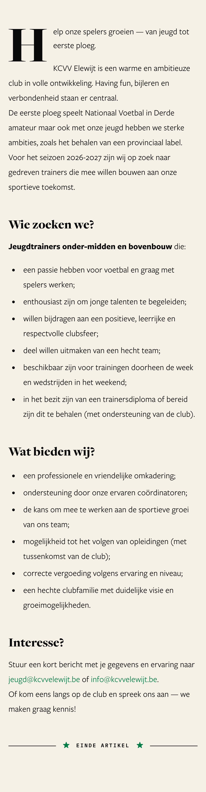
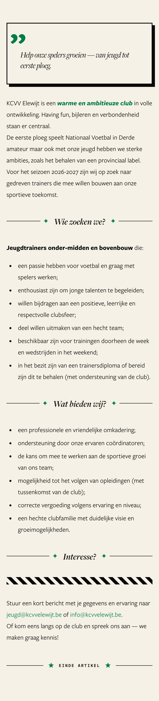
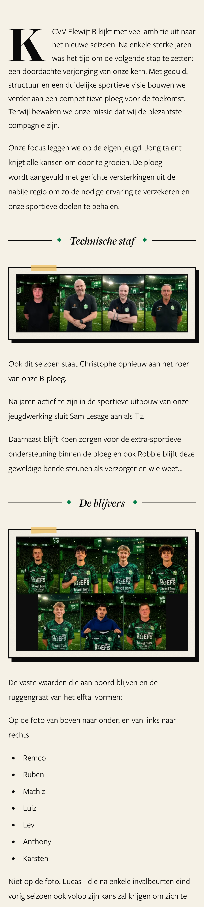
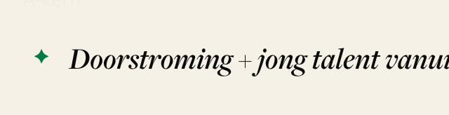
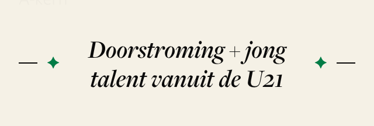
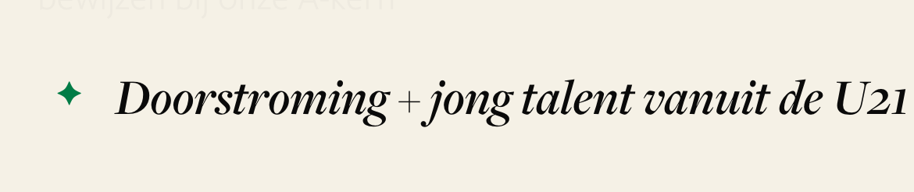
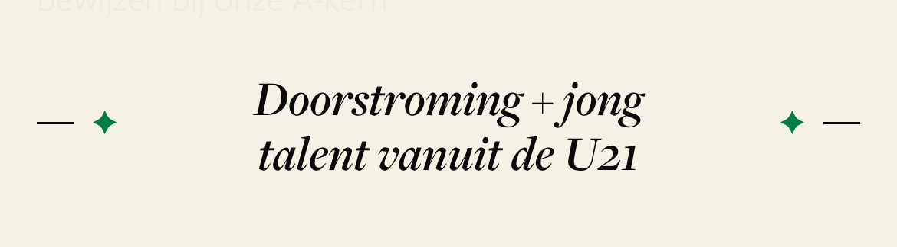

The article text: add decoration, or keep it quiet?
Screenshots of live articles on a phone. Ticket #2526 asks for either a rule (“one decoration per ~400 words”) or a written decision that the text stays quiet.
“Word trainer bij de plezantste compagnie!” (~250 words)
Left is the live article. Right is the same text with the four fanzine pieces added — each one copied from a live page, nothing invented:
-
Quote card — framed card, green quote mark, italic
text. Editors have it: style
Citaat. - Green words — a key phrase in bold green italic. Not in the editor's menu today.
-
Star heading —
✦ Wie zoeken we? ✦between two rules. Editors have it: styleTussentitel (groene divider). This article usedKop 3instead. - Striped band — the black-and-cream stripe from above the green call-to-action bands. Not in the editor's menu.


It already uses the tools
Star-and-rule section headings, framed photos with tape and shadow, the big first letter. The editor placed them where the story turns.

A notice, not a story
Most announcements are 80–250 words. A decoration rule of one per 400 words asks for none here — and a notice this short reads best plain.

| Type | Count | Length | What the text holds |
|---|---|---|---|
| Interview | 4 | almost all Q&A | Q&A blocks — already fully designed (name badge, question styling, act dividers) |
| Announcement | 4 | 80–250 words | paragraphs, a table or one photo |
| Announcement (squad) | 1 | ~530 words | 6 section headings, 5 framed photos |
A long section heading runs off the screen
The heading is forbidden to wrap.
Doorstroming + jong talent vanuit de U21 loses its
closing star on a normal phone and half its words on a small one. The
site's own rule (#2549) says display text wraps, it is never cut.



